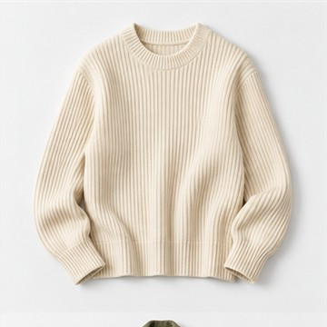
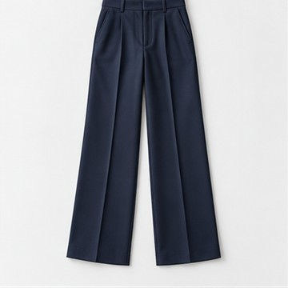
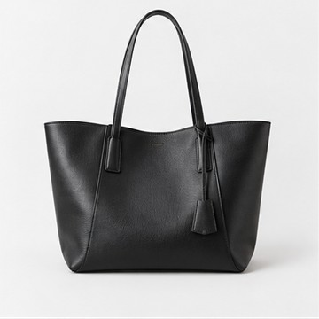
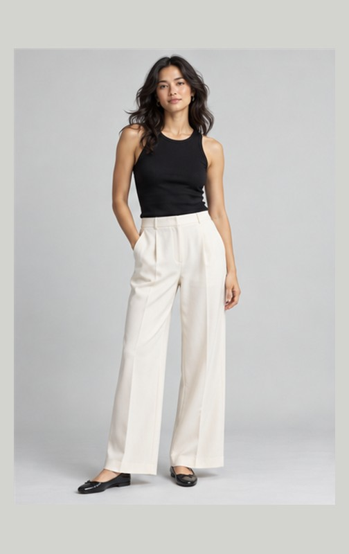
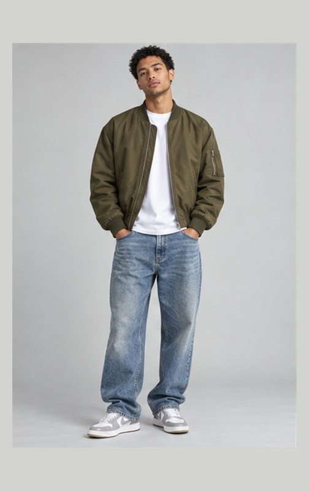
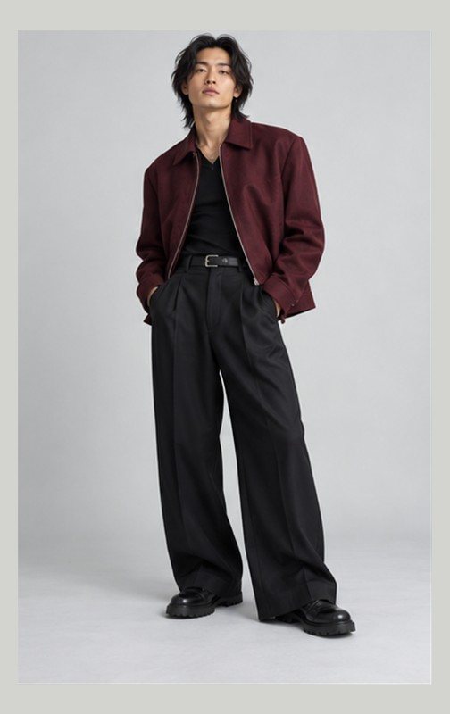
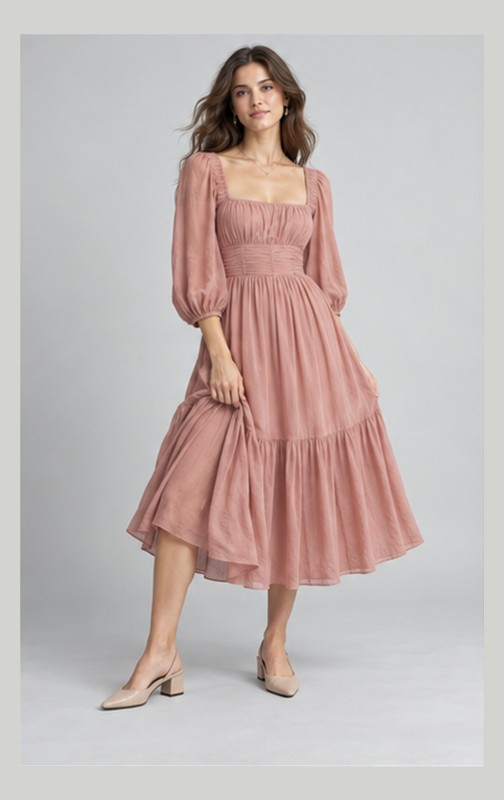

THE PIECES YOU LOVE



A fresh take on familiar favorites.01 / CURATE
A closet that clicks.
Bring your favorite pieces into your digital wardrobe. Rediscover what you own and start with something you love.
YOUR PERSONAL STYLE, REIMAGINED
Bring your wardrobe together. Play with the details.
See a look that feels like you, before you wear it.


01 — A FRESH PERSPECTIVE
You have the pieces. We help you see the potential.
From your go-to jeans to that one perfect ring,
bring it all into the picture.



A fresh take on familiar favorites.Bring your favorite pieces into your digital wardrobe. Rediscover what you own and start with something you love.

FROM FIRST LAYER TO LAST DETAILTops, pants, shoes, hats, and jewelry. Swap one piece, keep the rest, and fine-tune the details until it feels right.

Use AI photo try-on to picture your outfit or just one accessory. Explore a new direction before getting dressed.
02 — FOLLOW YOUR INSTINCTS
Monday minimal. Friday a little extra.
Your style doesn’t have to fit in a box.
Explore a few directions below.
LESS EFFORT. MORE YOU.
Clean lines, easy layers, and pieces that just work together. An everyday look with nothing ordinary about it.
Add a simple gold ring. Sometimes, the smallest detail changes everything.
A little taste of the possibilities. Full outfit building and try-on happen in the app.
03 — FROM IDEA TO “THAT’S IT”
No fashion rules to memorize.
Just a little curiosity, and your own good taste.
Add the pieces you reach for. Build a wardrobe around what actually feels like you.
Mix your layers, choose your shoes, add that bracelet. Each piece gets its own place in the look.
Use a suitable photo for AI try-on. Preview your whole outfit, or zoom in on one accessory.
04 — A FEW GOOD QUESTIONS
Cut & Cuff is a personal styling app that brings your digital wardrobe, outfit builder, and AI photo try-on together. Explore combinations, adjust individual pieces, and save the looks you love.
Yes. Choose an individual accessory or your entire outfit. Use a clear hand photo for rings and bracelets, a suitable portrait for earrings, and a full-body photo for a complete clothing look.
No. AI try-on is a visual styling preview. It can help you explore the look, but it does not guarantee garment fit, sizing, color accuracy, or fabric behavior. The editorial images on this website illustrate outfit ideas.
The current try-on creates a still image. A personalized, rotatable 3D view is an idea being explored; it is not an available feature.
Cut & Cuff is currently in development. There is no public app-store release linked here yet. Use “Stay in the loop” to find the project and check for availability updates. AI try-on requires a supported connected account and may be subject to that account’s access and usage limits.
LESS SECOND-GUESSING. MORE SELF-EXPRESSION.
Your next chapter in getting dressed. In development.